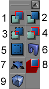

Beginners Guide To Mapping
As far as I could tell, there was no single page to introduce a beginner to mapping with UnrealEd. I am still a beginner myself, so I figure I might be able to write a good beginner's tutorial (that or waste a lot of my time  ).
).
Tarquin: There's Welcome To UnrealEd and Create a room, which have been very "under construction" for a long, long time. I've started laying down an overview of the concepts involved in map-making on Unreal Geometry, but, again, it's a rough draft. You're free to merge things if you like, or keep them as seperate articles covering different aspects from different angles. It's been said that different people want different styles of tutorial. I like the idea of a a "complete map in 20 minutes" page.
Tarquin: Suggestions for a rename, since at the mo this page clashes a bit with... Mapping Lessons and Beginner Topics
musicalglass: I think this should be "The Complete Guide to Mapping" the final repository for all lenghthy explainations in depth and Create A Room should be what is now [/Functional Map]? simple and to the point. For more info go here.
Tarquin: Well... we'd more or less decided to scrap this page and have its contents split into several Mapping Lessons pages. Just one of those things I hadn't got round to yet 
Overview
Goal
I will teach you how to build a simple map from scratch, including teleporters, liquids, lifts, SkyBoxes, doors, and glass.
Assumptions
I assume you have at least briefly played UT, know how to operate a PC, and know what cheese is. 
Let's get started!
The idea here is to demonstrate with utmost simplicity, how the construction process works. Assuming that you have already opened UnrealEd and are building with a NEW level. (Do UnrealEd Main Menu → File > New.)
A window will open, covering your screen with several confusing toolbars and windows.
The views
The windows are like views into your world. The one on the top left is like a blueprint, or top-down view of your map. The one on the top-right is a frontal view of your map, and the bottom right one is a side view. All three of the views I mentioned previously are 2D. They show no perspective and always are focused in one direction. The bottom-left view is the 3D view, similar to what you might see in UT with software rendering on.
Moving around in the 2D views
- Drag the mouse with either mouse button held down to scroll through the view.
- Drag the mouse with both buttons held down if you want to zoom in or out.
Moving around in the 3D view
- Drag the mouse with the left mouse button held down to move forward and turn left or right.
- Drag the mouse with the right mouse button held down to look up and down and turn left or right.
- Drag the mouse with both mouse buttons held down to move up and down and "sidestep" left or right.
More on viewports
The Toolbars
You will notice several toolbars, also. Many of the buttons in these toolbars are irrelevant to you at this point, so I will explain just a few now, and more as we progress farther into this tutorial.
The top toolbar
![[interface.toolbar]](images/interface-toolbar.png)
The toolbar at the top of the screen has the following different buttons in it. (Sorry, this is a rather cheap ripoff of other people's graphics I'm just too lazy to make my own. Thanks guys!) You don't really need to worry about the buttons with an asterisk (*) next to them at this point. Perhaps I'll explain them better in a future tutorial. (full list on toolbar)
- This group of buttons contains the omnipresent New, Open, and Save buttons which work just like in most other programs.
- This group of buttons has odd icons, but simply represent the Undo and Redo actions.
- Search for Actors*
- Actor Browser: This button lets you browse through all the actors, so you can place them in your level. I'll explain it in more detail later on.
- Group Browser*
- Music Browser*
- Sound Browser*
- Texture Browser: This button lets you browse through all the textures, so you can use them in your level. I'll explain it in more detail later on as well.
- Mesh Browser*
- 2D Shape Editor*
- UnrealScript Editor*
- Actor Properties*
- Texture Properties*
- Build Geometry: This builds all the geometry in your map, so the game knows what's what as far as surfaces and rooms go. (That's a very basic way of putting it, but don't worry abou it. My advice is to let UT do all the hard work for you.)
- Build Lighting: Clicking this button will build all the dynamic lighting. Basically this makes your level beautiful.
- Build Paths*
- Build All: Clicking this button is the same as clicking buttons 14, 15, and 16. It builds all the geometry, lighting, and paths in your level.
- Build Settings*
- Play Map!: After you have built and saved your level, you can click this magic button to test out your map in the game. It automagically loads UT and then your level, with a few bots thrown in for good measure.
The side toolbars
see toolbox
The viewport toolbars
More on toolbars
OK, enough of that crap! I wanna make a level!
Fair enough. Everyone always wants to get started right away. I did, tried some crappy tutorials, got confused, read more, got more confused, and gradually began to understand. 
Imagine the world to be a big piece of cheese. "Why cheese, Ars," you ask. Well, because
- I like cheese. It smells good, tastes good, and even better–it's good for you!
- The world in UT is sort of like a big, solid substance. I could of picked clay, but that would be boring, and Jello is clear.
- Cheese sometimes grows weird moldy stuff on it, which is cool in a gross sort of way.
Ah! How the hell did I get sidetracked onto cheese? Well, think about if you had a universe of cheese. How would you make a room in it? You'd carve it out–in other words, you'd subtract it. You could add cheese to that room if you wanted to have stairs or doors or lifts or whatever.
UT is the same way. To make a room in UT you need to subtract it from the world.
Now, to make that room...
You can think of brushes being 3-dimensional shapes that create the world like Lego blocks. In the toolbox, find the 3rd group of buttons; all greenish shapes (see picture). This is the brushbuilders group.
A room will be created initially with a single brush, and you can use any shape or primitive. The simplest is the cube mentioned above. So, left click the cube brushbuilder at the top of the left column, this produces the cube with a default height, length, and breadth (256 by 256 by 256 Unreal units). Ok,...for reference the actual TournamentPlayer height is about 80 or 85 world units high.
![[interface.toolbox.defbuilders]](images/interface-toolbox-defbuilder.gif)
You should see a shape made of dotted red lines in the UnrealEd Viewports: a square in the orthogonal viewports and a cube in the 3D viewport. This is the red builder brush. It's your cookie-cutter. It can take on any shape: try clicking on any of the brushbuilder buttons.
The red builder brush isn't actually a part of the Unreal world. (This is where the cookie-cutting analogy starts to break down, unfortunately). The RBB is like a blueprint of a brush: you make it into any shape you like, and then tell UnrealEd "I'll have a brush of this shape please".
Now, right click the button for the cube brushbuilder. A properties dialogue window pops up that allows you to enter the actual values for the height, length, and breadth of the cube. Make some alterations: generally using numbers that correspond the grid dimensions works best with the Unreal Engine, so it is suggested that you use numbers like, 8, 16, 32, 64, 128, 256, 512, and 1024 as your cube dimensions. Try these: Height > 512, Length > 512, and Breadth > 1024. In any of the 2D (Top, Front, or Side), or, 3D views (Wireframe, Textured, or Dynamic Light) you will see the red builder brush shape alter to the dimensions that you have selected. Maximize the Textured 3D view so that it encompasses the entire screen. The Total Blackness with the pale blue grid lines in the view is considered to be solid by the Unreal Engine. It's just an abstract notion, but, gives us a logical order for our brush operations.
Why 512?
This is approximately 5 times as tall as a human. See General Scale and Dimensions.
Click build and close the window.
pingz: According to that link, 1 foot = 16 UU. So 512uu is 32 feet tall or a little more than 5 times the heigh of a 6 foot tall human ( 5 1/3 to be exact ).
OK, now I have a red cube in the world. What next?
You can move the cube around in one of the 2D views by holding down CTRL and dragging. This cube is the active brush. Most mappers call it the red builder brush, and that name is used throughout this site. We have to subtract it to make it into a room. Remember my crappy cheese analogy?
Tarquin: I've removed the "active brush" page, as there's not much point in two adjacent links going to the same place. Terminology gives the term too and sends to the RBB page. You're right to give it the correct name, but out of habit at BuF we call it the RBB BTW, the cheese analogy is good. I always say clay, but cheese is tastier.
How do I subtract it?

We are going to subtract the Cube Brush from that solid world and create open space for our game level. This defines the collision properties of the CSG, or Constructive Solid Geometry so that our players will interact in a realistic manner with the world we create. There are three ways to Subtract a Brush:
- Do UnrealEd Main Menu → Brush → Subtract.
- enter the command brush subtract in the UnrealEd Console box at the bottom of the screen.
- you can press the subtract Brush button in the Brush operations section of the toolbox at the left of the Editor screen.(It's #2. If you hold your cursor over it it says "Subtract" in the ToolTip.)
When you do this, the Editor will create the rectangular shape with a default texture, which is a hideous bubbly white, two dimensional visible wall pattern. If we had opened the Texture Browser, and selected any texture before subtracting that cube brush, the resultant room would have that selected texture showing on all six sides (ceiling, walls and floor).
You have now created another brush (Confusing, huh?). This brush, however, is not the active brush. It really exists in the world, as a room. To keep from confusing you throughout the rest of this tutorial, when I say "brush" you can interpret it as "red builder brush".
Look in your 3D view. Practice flying around in there, and fly into your new room. It's pretty ugly right now. To improve it, we'll add custom textures and dynamic lighting.
More on Geometry
Textures
When you create a new room in UnrealEd, it automatically picks an ugly texture for you (how thoughtful!). You probably would prefer to use your own textures.
Browsing through the textures
This is pretty simple. Just click the texture browser button in the top toolbar (#8). A window will pop up, maybe with some textures already in it. This window has yet another toolbar in it. For now, just click the open button (like a folder). The open file dialog box will appear. Look through the list of texture packages. Pick one you like. For starting out, I recommend the "Ancient" texture pack. It has lots of cool textures.
See how there's two popup menus in the texture browser? The one on top shows the available packages of textures, and the bottom one shows the different texture classes. Select "walls" from the second popup menu and pick a texture you want for the walls in your room. You can now close the texture browser, or minimize it–whichever you prefer.
Applying the texture
Go to the 3D view. You should have screwed around enough by now to understand the gist of how to fly around. If you haven't, I suggest you try it now.
I'm done screwing around!
Good. Fly over to the wall you want to put your newly selected texture on. ALT-click the wall. This will place your texture there instantly. Go ahead and place our texture all over the the walls in your room. When you're ready to move on, you should know how to texture the ceiling and floor with the texture of your choice. If not, here's...
A brief Recap
- Open the texture browser.
- Open the texture package you want, unless you already have.
- Find a good texture, select it, and close the browser.
- Find the surface you wish to texture in the 3D view.
- ALT-click it.
More on Textures
Lighting
Now that you've had fun exploring and texturing your room (ha!), you can add some lighting. Right click somewhere on the ceiling in the 3D view. The surface context menu will pop up. Pick "Add light here" to add a light. You will see an ugly torch appear. Don't worry, the torch won't show up in the game–it just helps you see where the light is in the editor. Ctrl-drag your light around if you want.
More on Lighting
- Lighting Basics
- Lighting
- Shadows?
- Light (UT)s
Let's add the playerstart and go!
Pushy, are ye? OK, click on the pawn button (#4) in the top toolbar. This brings up the actor classes browser window. Click on the plus next to NavigationPoint, and then select the item "PlayerStart."
Open the 3D view and fly to a position where you can see the floor of your room. Right-click it and select "Add PlayerStart Here" from the surface context menu.
Build the level
Click icon #17 in the top toolbar to build your level.
(See Map Build Errors if you have a problem.)
Playtest the Level!
Now, you can click on the joystick button (#19). This will open Unreal Tournament and allow you to play your level for the first time.
More rooms
Kind of boring with only one room, isn't it? You probably experienced spawndeath, for one thing. You obviously need more rooms and playerstarts.
If you click on your red builder brush and then ctrl-drag it to somewhere right of your first room, then pick subtract, you will create another room like the first. To connect the two you need to create a hallway between them.
Do this by right-clicking the cube icon again and typing in the values 128 for height, width and breadth. This creates a small hallway. ctrl drag the brush and your rooms around so the hallway is in the right place, and pick subtract.
Check it out in the 3D view. Move your hallway and/or rooms around until it is just how you like it. Now you can add more PlayerStarts, lights, and maybe retexture the hallway and rooms.
It sucks that I have to move all my rooms around just to make a hallway!
Stop complaining. All you have to do is make a hallway that is slightly too big, position it so it overlaps both rooms you want connected, and click the Intersect button.
It didn't work!
Well, that just changes the shape of the brush. You also need to subtract the new brush. Cut it out of the cheese, remember? Also, if you screwed up, it could be that you didn't overlap both rooms. The brush shouldn't be too big to begin with, either. make sure it doesn't poke out of the other side of one of the rooms or you will get unpleasant results.
Cool. Now I have 2 rooms. But my map still sucks!
Read on, and quit yer whining, would ya? Thanks Why don't you add more rooms? Just connect more rooms to the first like you did before, and add lighting and textures.
Let's add some pickups!
Why not? This is a particularly easy step. All pickups are actors. Remember our good ol' friend, the PlayerStart? It was an actor too, right?
Weapons and Ammo
Go back to the Actor Class Browser. Remember, it's button #4 in the top toolbar. Expand the "Inventory" class, then the "Weapon" class, then the "TournamentWeapon" class. Often you'll see this referred to like this:
You will see several choices. Pick a weapon you want in your map, and close or minimize the Actor class browser.
Right-click somewhere in the 3D view and pick "Add <<the weapon you picked>> here." CTRL-drag it to where you want it in the 2D views. Repeat these steps with whatever weapons you want.
What about ammo?
Yes, this is confusing, because ammo is not in the same place as the weapons. Ammo is in
Place ammo the same way you would place weapons.
More about Weapons and Ammo
Health and Powerups
More about Health and Powerups
Liquids
How to make Liquids
OK, all you need to do is subtract an area that will be filled with the liquid you want, whether it's water, lava, slime, or tar.
Now, create a sheet brush that is slightly bigger than your water pit. The sheet brush button is the top-right one in the brush toolbar. Align the brush in the 2D viewports so it completely seals off the liquid filled "room".
Now, to add it to the room! Click the "Add Special Brush" button (#5 in the "Brush Operations" toolbar, as seen below.) From the popup menu, choose "Water" (Choose it even if you want lava, slime, or tar). Also, check the "2-Sided" box. Click OK, and then Close.
Congratulations! You're almost there! Now, you have to decide which type of liquid you want.
Water
You can find a nice water texture in the FireEng > Water texture package. It has great ripply effects and everything. After you have applied the water texture, go to the Actor Class Browser. Select
and stick it inside of the area that is to be filled with water.
Lava
Lava is done the same exact way as water, except that you should pick a good lava texture and place a
in the lava pit instead. A nice lava texture can be found in the FireEng > lava package.
Slime
Slime is done just like lava and water, except you use a, you guessed it, SlimeZone. You can find a good slime texture in the Liquids package. You'll also find a few other nice water textures.
Tar
Tar, in case you were wondering, is not dangerous to the player, per se. However, it slows down the player's movement greatly. It is done the same way as all of the above except with a TarZone actor. A good tar texture is in the Liquids package as well.
More on Liquids
Discussion
Ars-Magna: I have a lot more to do on this, but I'm too tired to do it tonight. Hope this will be able to help someone!
Sobiwan: I combed over this page in comparison with Mapping Lessons and have determined that this page is redundant. I say (Delete Me).
Wormbo: Really delete this now?
SoH_Ghost3021: It looks good to me!
dwjp: This is ace... tried the "Mapping lessons" got well confused this makes more sense for a starter. Excellent work...using the demo version mind so not all the bits are the same but works never-the-less....love the cheese!
SuperApe: Someone needs to make a decision on this. For now, I've removed the Delete Me tag and added Refactor Me and To Do tags. Check and compare with Mapping Lessons, Welcome To UnrealEd and Create a room. I can't tell if the language used here is "user friendly" or just needlessly unprofessional and sloppy. The organization sure needs a lot of work. Did a little markup.
Tgusagalpa:Everything here is repetitive. Should I say Delete Me?
Category To Do – If not refactored, really go through this and make it a) for beginners, b) look like other tutorials, c) link up, d) update for UT200x, e) edit down to a manageable size (i.e., this doesn't need to cover everything under the sun, just the beginner stuff)
Refactor Me – If not seriously worked on, refactor into Mapping Lessons, Create a room or maybe Welcome to UnrealEd, then remove.